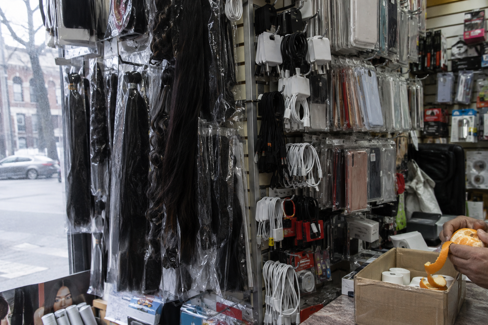
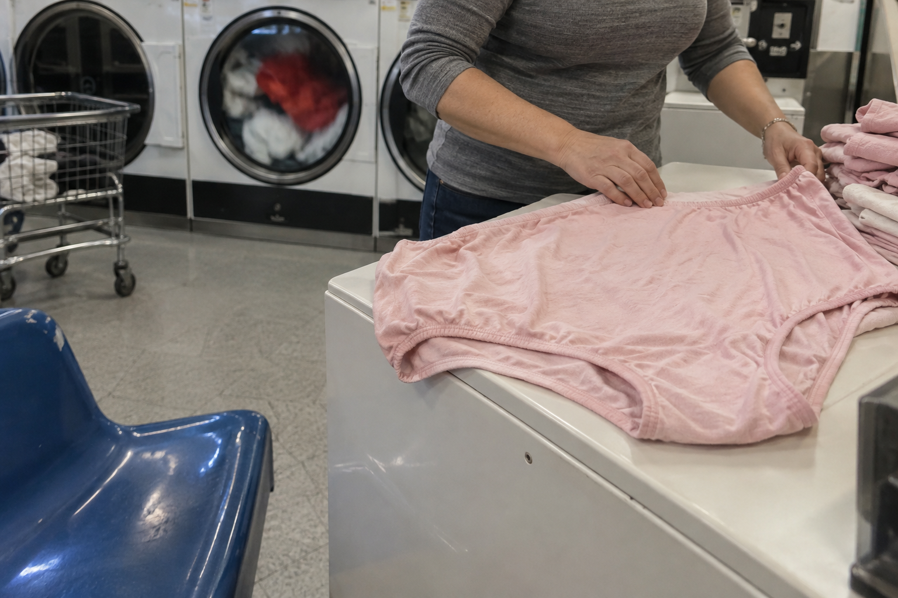
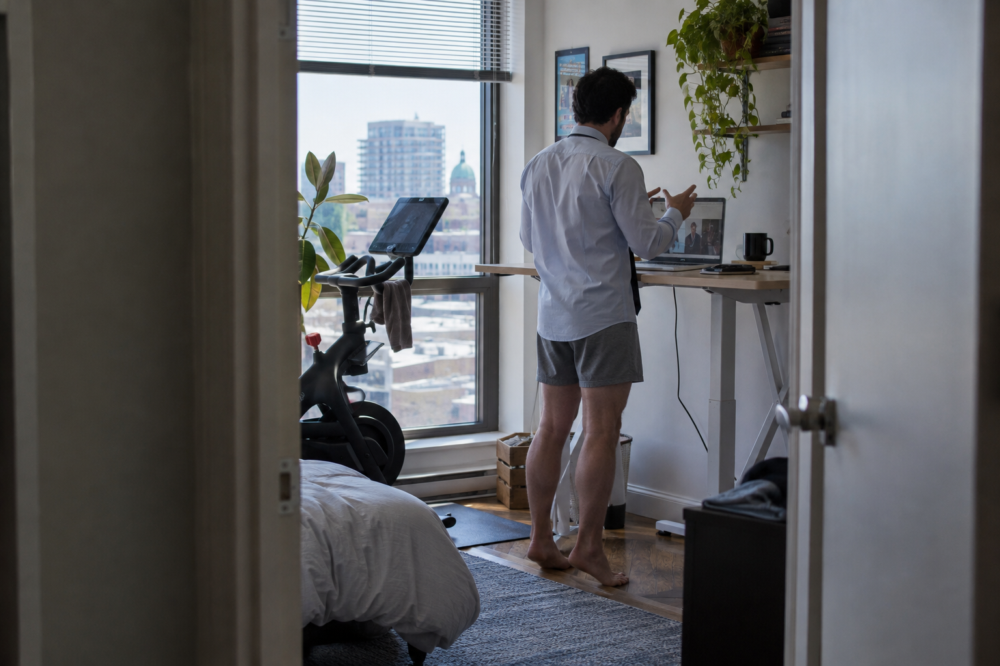
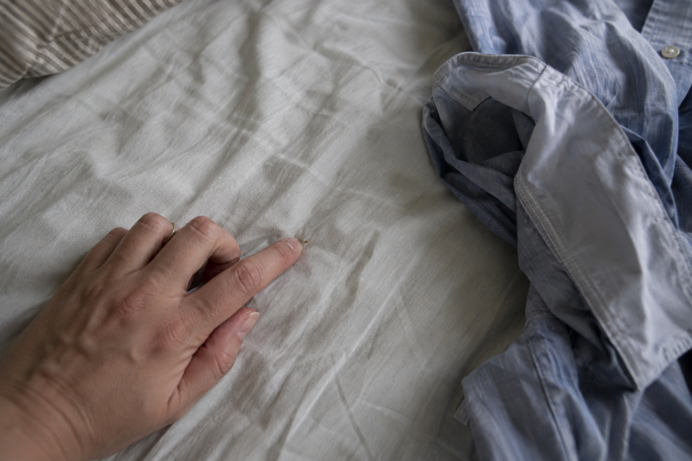
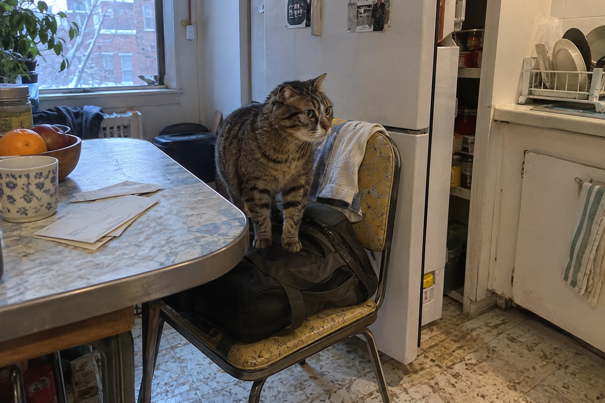
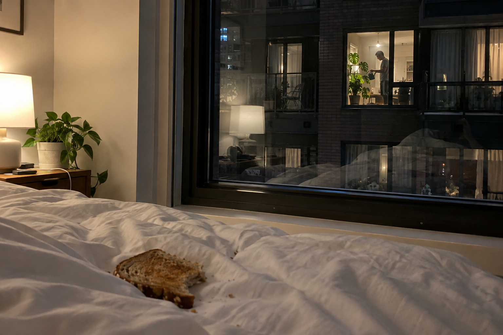
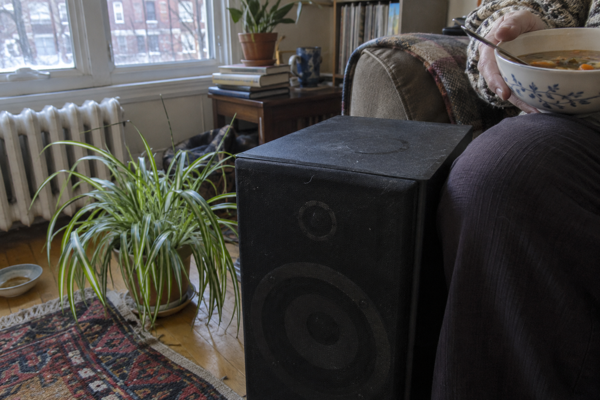
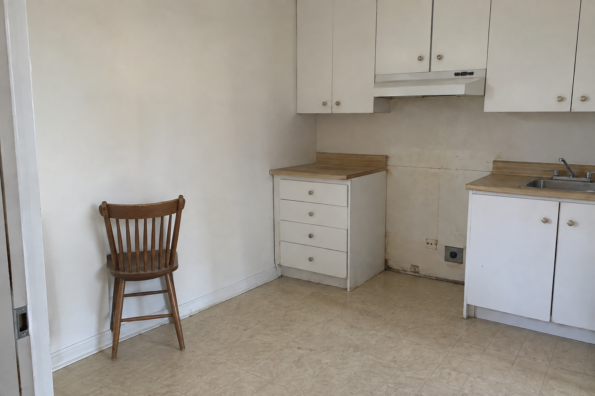

{kind=link}
February
Parc-Extension
The listing said chauffé éclairé and the stairwell on Ball had one bulb, on the first landing, so I came up the last flight with my phone light in my teeth and a bag in each hand and there was Sabrina at my door with a butter knife, working the latch. She didn't turn around. It sticks, she said, you lift and lean, and she lifted and leaned and it opened and she gave me the knife. Keep it by the door. No, it's the good knife, give it back. I kept it three weeks. She never asked.
She worked nights at the Jean Coutu and slept days in a mask with DO NOT DISTURB printed across the eyes, and around noon she'd push it up on her forehead and come out to tell us to shut the fuck up, with the mask up there saying it too. I liked her voice before she cleared it. Low, full of gravel. Then she'd cough and it was just a voice.
My room was six forty. You could stand next to the bed if the bag was on the bed. So the bag lived on the bed and I took it off to sleep and put it back to stand up, every morning, until March.
Milad had the back room and two apps and a third job at a fryer somewhere on Saint-Laurent, which is where the burn came from, a shiny patch on the inside of his forearm smoother than the rest of him. He ate over the sink with the insulated bag still on his back and both phones face up on the counter. When one lit he looked at it and kept chewing. When the other lit he said câlice to it, quietly, not angry. Once a drop of dishwater sat on the burn and didn't run, the skin was that smooth, and I was watching it and he said what. Nothing. He shook his arm over the plates and went back out.
He told me Parc-Ex was finished. Everybody knew, the university, the rents, his cousin's building on Querbes. I said I'd only just got here. That's what finished means, he said, and went down the stairs two at a time with the bag bouncing on his back.
On the corner there was a shop with hair extensions in the window, long black ropes of it hanging between the phone cases, and a woman inside eating an orange at the counter. I went in for nothing. She peeled it in one piece. I stood there looking at chargers I didn't need, smelling that orange, then walked four blocks in the slush to the fruiterie on Jean-Talon because I had to have one, not later, now. I ate it on our stairs in my coat. I put the peel in my pocket because I didn't want to go in yet and it was still in the pocket in April, gone hard and brown, and I kept it.
{kind=link}

The heat went off the second week. The radiators ticked all night, cold. I called. The landlord sent his son, Kosta, no gloves, a tape measure on his belt, rubbing his hands and asking how we could live like this, as if we'd done it. I said I had called about that. He said the boiler was a whole conversation, with his father, with the city, with a guy in Laval, and started measuring the hallway. For what he never said. Selling, probably, or the renovation that was coming for everybody.
I'd been in all afternoon. Sabrina asleep through the wall. A truck outside backing up, stopping, backing up, nobody guiding it. When he knelt to hook the tape under my baseboard his shirt rode up and his back was goosebumped and there was a line of hair going down, and I asked did he have to be somewhere. He did not have to be somewhere. We fucked on the mattress with my bag on the floor for once.
Afterward he showed me a video of his dog, an enormous brown thing, refusing to walk across a kitchen floor somebody had just mopped. It whined high and thin, a sound for a much smaller dog. We watched it four times. I laughed harder each time and couldn't have told you why, and then he was pulling his jeans on and looking for the tape measure, which was under me.
Image notes 01Hair, cables, orange
Black hair extensions hang among phone cables while a hand peels an orange over a cardboard box.
Her appetite wanders into a shop where hair and cables almost exchange identities.
Placement
After paragraph 6 of section 1.
Image prompt & alternative text
Use case: photorealistic-natural. Create ONE original landscape photographic illustration, 3:2, for an adult literary story set in ordinary contemporary Montreal. It should resemble a slightly awkward incidental personal snapshot, not a polished editorial shoot. Precise mundane materials, subtle eccentricity, imperfect framing, ordinary available light, realistic colours, modest digital grain. No picturesque poverty, no sepia or cinematic grading, no prettifying. No graphic overlays, watermark or added text. Not a collage. Inside a cramped neighbourhood shop: long black synthetic hair extensions hang among cheap phone charger cables and clear plastic phone cases. At the far lower right edge, just an adult shopkeeper's hand peeling an orange over an open cardboard receipt-roll box on a laminate counter; the orange peel curls into the box. The cables and hair almost confused at first glance. Frontal crooked crop, a bit too close to the window display, cool overcast February window light and ordinary fluorescent shop light, absolutely no readable brands. No face needed. The orange is incidental, not posed as a still life.
Alternative text
Black hair extensions hang among phone cables while a hand peels an orange over a cardboard box.
May
Côte-des-Neiges
The job was choosing. Two answers to the same question, both written by a machine, and I clicked the better one, all day, at a desk above a dollar store. How do I get blood out of a mattress. One said cold water and salt. One said it understood that stains can be frustrating. Cold water. Then more stains, a dead hamster, a man asking how to make an email sound less angry when he had every right, I read what they'd done to him, he had every right, and I picked the answer that let him stay a little angry. We were the quality team. It said so on the lanyard.
The man next to me had been a dentist in Algiers. He ate fennel out of a yogurt tub all morning, crunching, and did the work without his mouth moving at all. Mine moved. I read the answers the way you read in grade two, lips going, and by lunch the hinge of my jaw ached, and on the 165 home I caught myself mouthing the ads. Whitening. A college. A woman with her arms flung out over PRÊT PERSONNEL.
I lived in a basement with Fadwa, who worked at a care home and came off shift late and cooked. Every night. I'd hear the knife first, through the wall by my head, fast on the board, then the oil, and I'd lie there telling myself I was going to sleep until the onions caught and that was it, I was up. She cooked in her bra with her work trousers undone at the top. The window was at sidewalk height. Boots went past level with the stove. Nobody ever looked down, except once a dog.
She left a plate under foil. Some mornings I ate it cold standing at the sink, the rice gone hard at the edges, which is the best part. Some nights I sat on the floor against the fridge while she finished and we watched a man somewhere restore a handbag, beige, designer, somebody's kid had gone at it with a pen. Fadwa hated the colour. She said so every few minutes. We watched all of it.
Her boyfriend honked from the street instead of coming to the door. The first Friday I went to the window, which put my face at the level of his hubcap, and gave the hubcap the finger. He honked again. Fadwa laughed, then stopped laughing and said get away from there, seriously, and I went out the back and up the lane with my jacket half on.
I walked until things closed. The laundromat on Van Horne stays open late. A woman was folding a pile of enormous pink underpants on top of a dryer, smoothing each pair flat with both palms, and I sat on the bench with no laundry and watched a machine that wasn't mine go round. Somebody's towels, one red one flopping over the white. She asked had it eaten my money. No. She went back to folding. I stayed until her dryer stopped and then it seemed like I had to go.
{kind=link}

In May Fadwa needed a letter saying she'd lived in the basement since 2025, for the tribunal or the bank, I didn't ask which. She moved in in 2027. I said yes before she'd finished explaining. I typed it on the work laptop on my break with her behind me reading over my shoulder, her hand on my shoulder, then her thumb on the side of my neck, just resting there while she said it's é, not è. I couldn't find the key. I've known where that key is my whole life. Her hand went to the back of the chair and I found it.
She read it twice and said my French was getting better. It wasn't. I printed two. In case, I said. In case of what, she said, and took both.
Image notes 02The pink laundry
Hands fold large pink cotton underpants on a dryer; a red towel turns among white laundry behind them.
An aimless stay at the laundromat becomes an absorbed inspection of somebody else’s underwear.
Placement
After paragraph 6 of section 2.
Image prompt & alternative text
Use case: photorealistic-natural. Create ONE original landscape photographic illustration, 3:2, for an adult literary story set in ordinary contemporary Montreal. It should resemble a slightly awkward incidental personal snapshot, not a polished editorial shoot. Precise mundane materials, subtle eccentricity, imperfect framing, ordinary available light, realistic colours, modest digital grain. No picturesque poverty, no sepia or cinematic grading, no prettifying. No graphic overlays, watermark or added text. Not a collage. Late night Montreal laundromat, eye level from a plastic bench. An adult woman's practical hands smooth an enormous pair of plain faded pink cotton underpants on top of a dryer; a pile of similar underwear sits beside it. Only her clothed middle and hands visible at the edge, no face or undressed body. Behind, a red towel is blurred inside a turning washing machine among white towels. Harsh flat laundromat lighting, ordinary worn enamel, accidentally funny oversized laundry, quiet rather than sentimental. No posed fetish presentation, no text or logos.
Alternative text
Hands fold large pink cotton underpants on a dryer; a red towel turns among white laundry behind them.
July
Verdun
The cooling centre was a church hall with half the lights off to keep the heat down. Across from me a woman had a baby and a bag of frozen peas and kept moving the peas from the baby's neck to her own face and back, saying sorry, sorry, every time the baby made a sound. The baby didn't mind. It kicked when the peas went away. An old man was doing a crossword standing up, the paper on the seat of a chair he would not sit in, and every so often he said a word out loud that wasn't the answer. I went out to smoke and came back soaked down the back of my shirt, and the woman held out the peas without looking at me and I put them on my wrists.
I met Sam at the dep on Wellington. He was explaining orange wine to the cashier, who had already rung it through and was waiting for the card. Have you tried it, he said, to me. No. He had air conditioning, he mentioned that too, central. I went home with him for the air and for his forearms, which were freckled and very clean, the forearms of a man who had never carried anything to a car he didn't want to carry.
His place had a Peloton aimed at the window, a couch nobody sat on, and one fork. He ate with chopsticks so I could have the fork. A noodle fell in my lap and he reached for it before either of us thought, and his fingers were cold from the bottle. That was the first night. There were four more.
He worked in climate tech from a desk that went up and down on a button. In the mornings I lay in his bed with the door open and listened to him agree with people. Totally. A hundred percent. When somebody disagreed the desk went up, I could hear the motor, and from the bed I could see him in a shirt and tie on top and boxers below, going up on his toes when he made a point. I emailed my own job to say the internet was out. Then I lay there with the sheet pulled up to my nose for the pleasure of being cold in July. I would have paid him for it.
{kind=link}

In the evenings he talked about carbon markets, offsets, credits. I watched the water run down his glass and catch on his thumb. He wanted me to ask something, he kept leaving gaps. I asked was there anything to eat. There was cold rice. We fried it with the last egg and ate it out of the pan standing up and he was better then, with his hands busy, he stopped explaining.
His girlfriend was back Sunday. He told me while I was going through his cupboards for a clean towel, cupboards I knew by then, I knew exactly where the towels were and I was opening them anyway. I slammed one and it bounced back and hit me in the face. Neither of us said anything. Then I was laughing so hard I had to sit on the edge of the tub, my cheekbone hurting, and I couldn't stop.
I only came for the air conditioning, I said.
I know, he said. But it was nice. Right?
It was nice. I took the wet towel off the hook and hung it over the shower rail so it would be dry before she got home, and then I thought, what am I doing, and left it there.
Image notes 03Business on top
A man in a business shirt and loose boxers rises onto his toes during a call at a standing desk.
The desk rises during a disagreement; the dignity of the call depends on the camera’s crop.
Placement
After paragraph 4 of section 3.
Image prompt & alternative text
Use case: photorealistic-natural. Create ONE original landscape photographic illustration, 3:2, for an adult literary story set in ordinary contemporary Montreal. It should resemble a slightly awkward incidental personal snapshot, not a polished editorial shoot. Precise mundane materials, subtle eccentricity, imperfect framing, ordinary available light, realistic colours, modest digital grain. No picturesque poverty, no sepia or cinematic grading, no prettifying. No graphic overlays, watermark or added text. Not a collage. Candid domestic absurdity seen from a distant bedroom doorway into a contemporary but unexceptional Montreal condo. An adult man about 35 on a video work call at a raised standing desk, seen mostly from behind in three-quarter view: neat ordinary business shirt and tie above, loose plain opaque cotton boxer shorts below, bare calves and feet rising slightly onto his toes while he gestures at the laptop. Modest nonsexual body language. No nudity, no bulge or crotch emphasis. His face barely glimpsed and laptop screen unreadable. A stationary exercise bike awkwardly aimed at a window is partly cut off on one side. Flat July daylight through blinds; ordinary cool air, no luxury-ad polish.
Alternative text
A man in a business shirt and loose boxers rises onto his toes during a call at a standing desk.
September
Hochelaga-Maisonneuve
At a party on Adam somebody gave me a shift unloading chairs for a wedding and I wrote the address on the flap of a beer box and tore it off. Then a woman asked had I ever worked a bar, and I had, and did I own black pants, and I said depends how dark the bar is. She laughed and gave me a number. By eleven I had two jobs in my back pocket on cardboard and hadn't paid for a drink.
Somebody's cousin had a guitar and knew the first verse of everything. Out on the balcony three women were fighting about a union vote, really fighting, and every few minutes they'd stop to cup a lighter for each other and then go straight back in where they'd left off. I stood out there with them until my beer went warm. Nobody asked who I was.
Vincent fixed motorcycles on Ontario. Grey beard, black in the creases of his knuckles and down the sides of his nails that didn't come out, I watched him try later, at his sink, with a brush. When I said quality team he asked where, his ex had done quality at Bombardier, so I explained the two answers and picking the better one, and he asked what you do when they're both bad. You pick one anyway, I said. He looked at me a while as if I'd said something about myself.
He lived over a shop and the solvent came up through the floor so the whole bed smelled faintly of it. He moved a pile of folded laundry off the bed onto a chair, carefully, so it wouldn't come unfolded. He was careful with me the same way and I wanted to take his wrist and say stop, stop being careful, and I didn't, I kept my hands under my head. A bike went past outside, a loud one, and we both stopped and listened to it all the way up the street.
After, he sat on the edge of the bed with his back to me, turning a sleeve right side out, and told me his son was at Sainte-Justine. Since June. He's eight. They had said aggressive and I waited for the rest of the sentence and there wasn't any rest, that was the word, that was what they'd given him to take home.
His shoulders went. No sound at all. I put my hand out and got as far as the sheet behind him, and there was a hard little bead of detergent stuck in the weave, and I picked at it, I picked at it a long time. He kept working at the sleeve.
{kind=link}

What does he like?
Motorcycles, what do you think.
He laughed through his nose and wiped it with the shirt he still hadn't put on. Which ones, I said. He showed me on his phone, a whole folder, and corrected how I said Ducati, twice. Downstairs somebody rattled the shop shutter and shouted his name. He called down that he was coming and didn't move, and I learned the difference between a Monster and a Panigale, which I have never needed since.
Image notes 04The bead in the sheet
A fingertip picks at a detergent grain in a creased sheet beside an inside-out shirt sleeve.
Her distracted fingertip remains beside the grief rather than illustrating or explaining it.
Placement
After paragraph 6 of section 4.
Image prompt & alternative text
Use case: photorealistic-natural. Create ONE original landscape photographic illustration, 3:2, for an adult literary story set in ordinary contemporary Montreal. It should resemble a slightly awkward incidental personal snapshot, not a polished editorial shoot. Precise mundane materials, subtle eccentricity, imperfect framing, ordinary available light, realistic colours, modest digital grain. No picturesque poverty, no sepia or cinematic grading, no prettifying. No graphic overlays, watermark or added text. Not a collage. Uncomfortably ordinary close snapshot of a creased pale cotton bedsheet, the fine weave visible. An adult woman's hand enters from the edge and uses one fingertip to pick at one tiny whitish hard grain of laundry detergent stuck in the weave. A man's ordinary crumpled shirt with one sleeve inside out is half visible at the far edge, no people beyond this hand, no bodies or nudity. Mid-distance close-up, not scientific macro or product photography. Weak ambient light from a window outside frame, uneven focus, spare composition which looks like somebody stared at something unimportant too long. Do not add poetic symbols.
Alternative text
A fingertip picks at a detergent grain in a creased sheet beside an inside-out shirt sleeve.
November
Saint-Henri
I was painting the kitchen when the letter came, so there was a white thumbprint on the envelope before I'd opened it. Major works. Temporary vacancy. A paragraph about cooperation and the owner's commitment to his tenants. Two thousand if I was out by the first. I looked up the tribunal, and the date they were giving for hearings was so far off I read the year twice, then once more out loud.
I finished the kitchen anyway. I'd pulled the stove out and scraped somebody's years of grease off the wall behind it, orange and soft, it came up in curls, and I wanted that strip white, the strip nobody was ever going to see. It took the whole afternoon.
The Portuguese couple downstairs stopped answering their door. Everyone else took the money. I kept getting the last tenant's mail, a Hydro bill, a flyer from a church, and that's how I found her, on Bourget, in a place so small the table blocked half the fridge. Her cat had one ear. It stood on my bag, just stood there, until I moved the bag to a chair, and then it stood on the chair.
{kind=link}

She asked what I was paying. Eleven ninety. She'd paid six ten. She said six ten again to the cat, as if the cat had been there when she signed and could back her up.
Her husband had died in the back room. By the window.
I'm sorry.
Don't be sorry, it was the good room.
She wanted to know about the lilac. Still there. Did the upstairs toilet still do that, the whine after you flush. Yes, half the night sometimes. She laughed with her whole back, leaning into the chair, and for a while we were both living there, in the same apartment, complaining about the same toilet, her table digging into my knee and someone next door flattening cans one at a time for the deposit.
What's your name?
Renée.
Renée, listen to me. Don't take the two thousand.
I said I'd think about it. On the sidewalk I had a missed call about a coat check that night, and I called back with my glove in my teeth and it was already gone. I bought a cheese pastry that was too hot and burned the roof of my mouth, and the whole ride home I kept going at the loose skin with my tongue. I couldn't leave it alone.
I took the money. I pushed the stove back before the paint had dried and it stuck to the wall, and when the movers pulled it out I heard it tear.
Image notes 05The cat on the bag
A one-eared cat stands on a bag on a chair in a kitchen where the table blocks the refrigerator.
The cat has claimed the bag and the furniture barely permits a visit.
Placement
After paragraph 3 of section 5.
Image prompt & alternative text
Use case: photorealistic-natural. Create ONE original landscape photographic illustration, 3:2, for an adult literary story set in ordinary contemporary Montreal. It should resemble a slightly awkward incidental personal snapshot, not a polished editorial shoot. Precise mundane materials, subtle eccentricity, imperfect framing, ordinary available light, realistic colours, modest digital grain. No picturesque poverty, no sepia or cinematic grading, no prettifying. No graphic overlays, watermark or added text. Not a collage. Plain cramped Montreal kitchen in November, an older formica table placed so close to the refrigerator that its door can only open partway. An ordinary healthy adult tabby cat with one healed missing outer ear stands awkwardly and determinedly on a soft visitor's bag atop a kitchen chair. The cat looks off frame, not cutely at camera; include all four paws, slightly ungainly stance. No wound, no gore. Almost absurd furniture geometry, but physically plausible ordinary room. A few unopened envelopes on the table, not legibly printed. Flat cold window light, faded practical surfaces, normal domestic care. Not ruin photography, not whimsical art.
Alternative text
A one-eared cat stands on a bag on a chair in a kitchen where the table blocks the refrigerator.
January
Griffintown
Marie-Ève could strip a king bed on the phone to her daughter and never stop talking and end up with the fitted sheet folded square over one arm. I got mine caught under the mattress corner every time. She'd come out of the bathroom still talking, no you're not going, no, and lift the corner for me with her knee without looking. By the time I could do it myself she'd stopped watching.
We did short-term rentals, the glass ones along the canal. The app gave you a window between checkout and check-in. Sometimes a guest was still there when I let myself in. One man sat on the couch in his underwear eating pad thai out of the box and looked at me as if I'd come to take the smell of his pad thai away from him, which I had. I went down and waited by the recycling. You don't get paid for the recycling.
On Peel a woman was filming herself unpacking. She lifted a dress out of tissue paper and gasped, then put it back in the tissue and lifted it out and gasped again. I needed the floor she was standing on. One sec, she said, one sec. Afterward I caught myself in the elevator mirror holding the vacuum hose out in front of me and I did her gasp. I did it twice.
I found a wedding ring on a sink and put it in the nightstand, which is what we did with rings. In another unit, in the nightstand, there was a gun lying on a phone charger. I shut the drawer with my hip and did the bathroom and the kitchen and then the bathroom again because I'd forgotten the mirror. I didn't tell Marie-Ève. What she told me that week was never open the fridge, and later, never open the fridge unless you're finished for the day, and then she opened one and took a yogurt.
There was a unit on Ottawa Street that was usually empty on Tuesdays. I started with the shower. Hot water hard on the back of my neck until I had to bend over with it, and I stayed bent over until the mirror went white, then dried off with a towel I'd have to wash, which was fine, I was washing them anyway. I lay down on the bed while the load ran. That was all I meant to do.
When I woke up the windows were black. Across the courtyard a man in his underwear was watering a plant, lifting every leaf with two fingers to get the water underneath. It took him a long time. I watched every leaf. I didn't have to be anywhere until morning.
{kind=link}

After that I checked the calendar before I packed my bag. I brought nothing, not a toothbrush. You wipe the sink, you take the hair off the pillow, you go back for the hair you only think you took. If they found out that was the job gone, and maybe Marie-Ève's with it, she'd vouched for me. I kept going on Tuesdays. Chauffé, éclairé. I ate toast in the bed with the lamp on and my bare feet out from under the duvet, and in the morning there were crumbs stuck to my soles and I put another load in and went back to bed until it finished.
Image notes 06Toast, borrowed bed
Toast crumbs on borrowed bedding, with a distant neighbour watering a plant across the courtyard.
Borrowed comfort, crumbs and a neighbour’s private routine share one window.
Placement
After paragraph 6 of section 6.
Image prompt & alternative text
Use case: photorealistic-natural. Create ONE original landscape photographic illustration, 3:2, for an adult literary story set in ordinary contemporary Montreal. It should resemble a slightly awkward incidental personal snapshot, not a polished editorial shoot. Precise mundane materials, subtle eccentricity, imperfect framing, ordinary available light, realistic colours, modest digital grain. No picturesque poverty, no sepia or cinematic grading, no prettifying. No graphic overlays, watermark or added text. Not a collage. Night photograph from an unoccupied borrowed bed in an ordinary short-term rental in Montreal. Foreground: a piece of half-eaten toast on a bare white duvet, tiny crumbs caught in a crease, a bedside lamp left on in a room with nobody present. Across the courtyard through the window, another apartment has a brightly lit houseplant and an adult man fully dressed in a plain T-shirt and loose tracksuit trousers gently watering it. He is a small distant everyday figure with no identifying face, no intimate pose. The pane faintly reflects the bedside lamp and laundried white bedding. Slightly awkward personal phone snapshot; practical comfort, boring condo architecture, uneven exposure. No dramatic or glamorous treatment.
Alternative text
Toast crumbs on borrowed bedding, with a distant neighbour watering a plant across the courtyard.
March
Mile End
My mother still had the apartment on Waverly, the one with the good windows. She was standing at them when I came up, holding a mug of tea she'd forgotten, watching the schoolyard across the street where nothing was happening. Her knees were bad on the stairs now. Across the hall Mrs. Kalogeras still listened for the mail truck and had her door open before the driver was out, same as always.
I'd brought rolls from a catering shift, a whole bag, they were going to throw them out. My mother cut one open, pressed the middle with her thumb, said these had been frozen, and ate it at the sink. I took the rest out of the bag so they wouldn't sweat.
Was I seeing anybody.
Sort of.
Sort of's fine, she said. Sort of is most of it.
I went for the bread knife, the drawer left of the stove where it had been my whole life, and my hand went all the way to the back past the grater and it wasn't there. I moved it, she said, and reached across me for the other drawer, and I went back into the table so hard the tea went over. We both grabbed for the mug. Neither of us got it.
Leave it. Get the cloth.
The cloth was where it had always been, over the tap.
She told me about Denis while I was on my knees wiping. 1994. She'd slept with him on the stairs, on the landing between our door and the upstairs, because I was asleep inside and the upstairs were away. He sold stereo speakers. She could not remember, she said, and she had tried, whether he gave her the discount before or after. Mrs. Kalogeras had come out for the mail partway through and gone straight back in.
I sat back on my heels with the wet cloth. My mother was laughing with a mouthful of roll, trying not to lose any.
Those speakers?
Those speakers. You want soup?
I did. While she heated it I took the spider plant off the left one and put music on, loud, too loud for the middle of the afternoon with the school right there. Turn it down, she said from the kitchen. I turned it down a bit. When she came in with the bowls I turned it down a bit more, and she sat on the arm of the couch to eat hers, next to the speaker, with her knee against it.
{kind=link}

Image notes 07The left speaker
A soup bowl and a clothed knee beside a worn speaker, with its spider plant moved to the floor.
An old sexual anecdote survives in an object that is still being used.
Placement
After paragraph 13 of section 7.
Image prompt & alternative text
Use case: photorealistic-natural. Create ONE original landscape photographic illustration, 3:2, for an adult literary story set in ordinary contemporary Montreal. It should resemble a slightly awkward incidental personal snapshot, not a polished editorial shoot. Precise mundane materials, subtle eccentricity, imperfect framing, ordinary available light, realistic colours, modest digital grain. No picturesque poverty, no sepia or cinematic grading, no prettifying. No graphic overlays, watermark or added text. Not a collage. Offhand low photograph inside a long-inhabited Mile End Montreal apartment in March. Close foreground an old black stereo speaker with a faint circular water stain on its top where a plant pot used to sit. A spider plant in a cheap pot has just been moved to the floor. At the edge of the frame an older adult woman's fully clothed knee in everyday trousers touches the speaker, her hand holding an ordinary bowl of soup just above it. The adult is seated on the arm of a worn couch, face not in frame. Beautiful window light by accident, not an artful arrangement; practical things crowded into the crop, a little lint on the grille, no retro shop styling. No text.
Alternative text
A soup bowl and a clothed knee beside a worn speaker, with its spider plant moved to the floor.
June
Villeray
Ahmed repaired elevators. I met him at the fountain in Parc Jarry, rinsing a bottle I'd found in the bottom of my bag with something green dried around the mouth, I didn't want to know what. He watched me rinse it and held out his. I'm nearly done, I said. He waited, and he waited without looking at me, which made me rush and splash my shoes.
Then the smoke came. Something was burning up north and the air went yellow and stayed yellow and got into the apartment with every window shut. I laid a wet towel along the bottom of the balcony door and lay on the floor with my face near it, breathing through wet cotton that smelled of nothing but wet cotton. The delivery app kept offering me a bonus, double, then more, if I'd go out in it. I turned the phone face down. Then I turned it over to see how much.
Ahmed came over with a fan. It pushed the same air around faster. I didn't care, I liked having him there to complain to about the fan. He took the cage off and washed the blades in my sink while I held the motor up out of the water with both hands, grey fluff coming off the blades in long strings. He had a pale band on his wrist where the watch went, the skin there softer-looking than the rest. He was explaining the new buildings, the doors, the sensors, the one part nobody can get without buying the whole assembly, and he caught me looking at his wrist.
What?
Show me the part, I said.
He found a picture on his phone and I looked at the picture of the part properly, for a long time, so he'd keep standing there.
He stayed that night and came back two nights later. In the mornings he put his head under the kitchen tap to wet his hair down and flattened it looking at himself in the side of the toaster. I wanted to go down the stairs with him and get on whatever bus he got on. I had a shift at the returns warehouse, sorting clothes people had sent back, sniffing the armpits before the tags went back on, that was really the job, sniff, tag, bin. I let him go and sat on the edge of the bed with my shoes in my hand until I was late.
Sunday the air cleared. Everybody came out onto their balconies with whatever they'd been doing inside, a woman shelling peas into a steel bowl, a man with a laptop, the kids on Casgrain screaming for no reason, and under all of it somebody downstairs beating eggs, I could hear the fork on the bowl. I went out without a jacket and walked past the bus stop and past the dep where I was supposed to get milk and kept going, down to the tracks, where the weeds were hot and smelled green again.
I sat on a concrete barrier until the backs of my legs went numb. Somewhere out of sight they were coupling cars, the big dull bang of it and then nothing and then another one. I wanted a train to come by. None did.
When I got home Ahmed had sent me a picture from inside a shaft, his boots on the roof of the car, a cable going up out of frame. I made it bigger to see where he was. Then I went on the listings. Rosemont, by the tracks. Chauffé, éclairé. The photo was a kitchen with no stove and one chair turned to face the wall. I wrote to ask when I could see it, and whether the chair came with it.
{kind=link}

Image notes 08Does the chair come with it?
A rental kitchen with a gap for the missing stove and one chair turned toward the wall.
The inexplicable chair is the actual detail she asks about, left as ordinary as a rental listing.
Placement
After paragraph 10 of section 8.
Image prompt & alternative text
Use case: photorealistic-natural. Create ONE original landscape photographic illustration, 3:2, for an adult literary story set in ordinary contemporary Montreal. It should resemble a slightly awkward incidental personal snapshot, not a polished editorial shoot. Precise mundane materials, subtle eccentricity, imperfect framing, ordinary available light, realistic colours, modest digital grain. No picturesque poverty, no sepia or cinematic grading, no prettifying. No graphic overlays, watermark or added text. Not a collage. A completely mundane slightly crooked smartphone rental-listing photograph of an empty Rosemont Montreal kitchen. Plain cabinets, a conspicuous empty appliance-width gap where a stove is missing, one battered ordinary wooden dining chair turned fully toward a blank wall so anyone sitting on it would face the wall at close distance. See chair from behind at an angle: its backrest towards the viewer, seat extending toward the wall. Natural flat daylight, slightly overexposed window outside frame, dull lino, inexplicable arrangement but nothing supernatural. No people, no text, no new decorative objects, no surreal or horror lighting. The image looks carelessly made by a landlord, not composed by an artist.
Alternative text
A rental kitchen with a gap for the missing stove and one chair turned toward the wall.